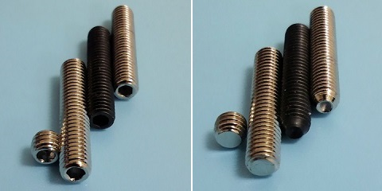

DiMarzio ヘクサ・ポールピース交換
2015年12月06日 カテゴリー：ベース関係
以前交換したDiMarzio Model J DP123ですが、やはり見た目はシルバーのポールピースがいいと思っていましたので交換してみました。（ついでにコントロールプレートも交換しています。）
DiMarzioのピックアップで使用されている六角形の穴が空いた高さ調整可能なポールピースは、ヘクサ・ポールピースというそうです。普通のギター用シングルピックアップやベース用ピックアップでは、ポールピース自体が磁石となっていて交換することは難しいです。しかしヘクサ・ポールピース仕様のピックアップは、ピックアップの下に磁石が取り付けられていてポールピース自体は磁石ではなく、左に回し続ければ取り外すことができます。素材が何かわからないのですが、たぶん鉄だろうと思います。

先がくぼんでいるものがDiMarzio DP123とDP111のポールピースです。先がくぼんでいない平先のものをMonotaROというサイトで買いました。止めねじやイモネジという名前で売られています。SCM440という素材もありますがよくわからないので、鉄／ニッケルめっきのものにしました。大きさはM5×4mmとM5×25mmです。短い方は音をほとんど拾わず、ポールピース自体を取り外した場合の穴を塞ぐために使います。六角穴は購入した止めねじの方が微妙に大きいです。音量や音質は聞き分けることができない程度で、特に問題なさそうです。
静音ギターに取り付けていたピックアップの空いていた2弦にも短い止めねじを取り付けています。